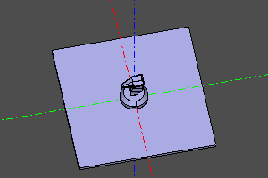
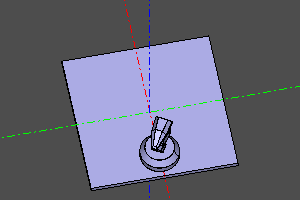
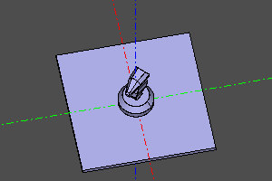
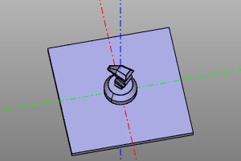
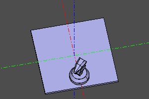
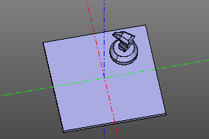
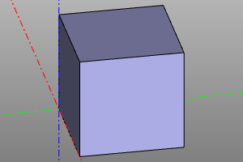
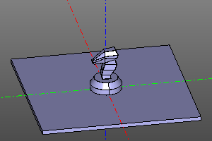
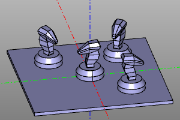

Афинные преобразования.
Парадигма ZenCad предполагает, что большая часть объектов появляется в точке начала координат, после чего перемещается к месту своего назначения с помощью механизма преобразований.
Обычно, при работе с геометрией, преобразования выполняются с помощью методов класса Shape (представляющего геометрические тела), но для построения сложных преобразований или работы с анимацией афинные преобразования также могут создаваться в качестве обособленных объектов.
Афинные преобразования в ZenCad представлены объектами класса Transformation (однородные преобразования) и класса GeneralTransformation (афинное преобразование общего вида). Объекты этих класов порождаются семейством функций описанных ниже в этом разделе.
Следует помнить, что преобразования общего вида вычислительно сложнее и могут сильно изменять внутреннее представление геометрического объекта.
С математической точки зрения объекты преобразования является линейными операторами и относительно них допустимы некоторые операции линейной алгебры. Соответствующий функционал библиотеки описан в разделе "Операции над преобразованиями".
Функции для работы с преобразованиями и специальные виды преобразований описаны в разделе "Дополнительные преобразования".
Базовые преобразования.
Существует четыре базовых преобразования: поворот, трансляция, масштабирование и отражение.
Поворот
Поворот тела вокруг оси заданной вектором v и проходящей через начало координат на угол a.
Если угол a не указан, то в качестве угла поворота берётся радианная мера, численно равная модулю вектора v.
Методы трансформируемых геометрических объектов:
# Основной синтаксис:
shp.rotate([x,y,z], a=None)
shp.rotate(x,y,z)
shp.rotateX(x)
shp.rotateY(y)
shp.rotateZ(z)
# Сокращенный синтаксис:
shp.rot([x,y,z], a=None)
shp.rot(x,y,z)
shp.rotX(x)
shp.rotY(y)
shp.rotZ(z)
Создание объекта трансформации:
rotate([x,y,z], a=None)
rotate(x,y,z)
rotateX(x)
rotateY(y)
rotateZ(z)
Трансляция
Паралельный перенос тела на вектор (x,y,z). По историческим причинам (в частности для совместимости с OpenScad), в библиотеке zencad есть два синонимичных семейства функций/методов translate и move, а также их мнемонические обозначения.
Методы трансформируемых геометрических объектов:
# Основной, альтернативный, мнемонический синтаксис:
shp.translate(x=0,y=0,z=0)
shp.translate([x,y,z])
shp.move(x=0,y=0,z=0)
shp.move([x,y,z])
shp.moveX(x)
shp.moveY(y)
shp.moveZ(z)
shp.right(x) # moveX(+x)
shp.left(x) # moveX(-x)
shp.forw(y) # moveY(+y)
shp.back(y) # moveY(-y)
shp.up(z) # moveZ(+z)
shp.down(z) # moveZ(-z)
# Сокращенный синтаксис:
shp.movX(x)
shp.movY(y)
shp.movZ(z)
Создание объекта трансформации:
# Основной синтаксис:
translate(x=0,y=0,z=0)
translate([x,y,z])
# Альтернативный синтаксис:
move(x=0,y=0,z=0)
move([x,y,z])
moveX(x)
moveY(y)
moveZ(z)
# Мнемонический синтаксис:
right(x) # moveX(+x)
left(x) # moveX(-x)
forw(y) # moveY(+y)
back(y) # moveY(-y)
up(z) # moveZ(+z)
down(z) # moveZ(-z)
Масштабирование
Изменение размера тела на коэффициент a. Может выполняться в направлении заданной оси или изотропно.
Методы трансформируемых геометрических объектов:
shp.scale(a)
shp.scaleX(a)
shp.scaleY(a)
shp.scaleZ(a)
Создание объекта трансформации:
scale(a)
scaleX(a) # general_transformation
scaleY(a) # general_transformation
scaleZ(a) # general_transformation
scaleXYZ(x,y,z) # general_transformation
Отражение
Операция отражения геометрии относительно точки, оси проходящей через начало координат или плоскости, проходящей через начало координат.
При отражение относительно точки задаются координаты центра трансформации. При отражение относительно оси задаётся вектор оси трансформации. При отражение относительно плоскости задаётся вектор нормали отражающей плоскости.
Методы трансформируемых геометрических объектов:
# Отражение относительно центра.
shp.mirrorO(x=0,y=0,z=0)
shp.mirrorO([x,y,z])
# Отражение относительно оси.
shp.mirror_axis(x,y,z)
shp.mirror_axis([x,y,z])
shp.mirrorX() # equal to mirror_axis(1,0,0)
shp.mirrorY() # equal to mirror_axis(0,1,0)
shp.mirrorZ() # equal to mirror_axis(0,0,1)
# Отражение относительно плоскости.
shp.mirror_plane(x,y,z)
shp.mirror_plane([x,y,z])
shp.mirrorXY() # equal to mirror_axis(0,0,1)
shp.mirrorYZ() # equal to mirror_axis(1,0,0)
shp.mirrorXZ() # equal to mirror_axis(0,1,0)
Создание объекта трансформации:
# Отражение относительно центра.
mirrorO(x=0,y=0,z=0)
mirrorO([x,y,z])
# Отражение относительно оси.
mirror_axis(x,y,z)
mirror_axis([x,y,z])
mirrorX() # equal to mirror_axis(1,0,0)
mirrorY() # equal to mirror_axis(0,1,0)
mirrorZ() # equal to mirror_axis(0,0,1)
# Отражение относительно плоскости.
mirror_plane(x,y,z)
mirror_plane([x,y,z])
mirrorXY() # equal to mirror_axis(0,0,1)
mirrorYZ() # equal to mirror_axis(1,0,0)
mirrorXZ() # equal to mirror_axis(0,1,0)
Операции над преобразованиями.
Аффинные преобразования являются линейными операторами и относительно них может быть выполнены некоторые операции линейной алгебры.
Композиция.
Композиции аффинных преобразований выполняются с помощью оператора умножения. Следует учесть, что композиции аффинных преобразований некоммутативны.
Композиции преобразований следует читать справа налево. Нпример, в примере ниже, запись moveX(20) * rotateZ(deg(60)) Означает, что мы сначала совершаем поворот на 60 градусов, а потом делаем паралельный перенос по оси X на 20 единиц.
Пример:
trans = moveX(20) * rotateZ(deg(60))
m = zencad.internal_models.knight()
disp(trans(m))
# alternate: box(5, center=True).rotZ(deg(60).movX(20)
| До | После |
|---|---|
|  |  |
Инверсия.
Вычисление обратного преобразования.
Сигнатура:
trsf.inverse()
Пример:
trans = rotateZ(deg(45))
m = zencad.internal_models.knight()
disp(trans(m), color.green)
disp(trans.inverse()(m), color.red)
| Преобразование | Инверсия |
|---|---|
|  |  |
Пример:
trans = moveX(20) * rotateZ(deg(45))
m = zencad.internal_models.knight()
disp(trans(m), color.green)
disp(trans.inverse()(m), color.red)
| Преобразование | Инверсия |
|---|---|
|  |  |
Примечание. Инверсия композиции преобразований может быть вычислена как: (A * B)-1 = B-1 * A-1
Дополнительные преобразования.
Преобразование само в себя.
Специальное преобразование, никак не изменяющее объект.
nulltrans()
| До | После |
|---|---|
|  |
Множественное преобразование.
Оператор множественного преобразования создаёт объединение преобразований объекта прототипа. transes - массив преобразований.
multitrans(transes)
Пример:
def extrans(): return multitransform([
translate(-20,20,0) * rotateZ(deg(60)),
translate(-20,-20,0) * rotateZ(deg(120)),
translate(20,20,0) * rotateZ(deg(180)),
nulltrans()
])
disp(extrans(zencad.internal_models.knight()))
| До | После |
|---|---|
|  |  |
Минимальный поворот.
Данное преобразование соответствует минимальному поворота от вектора f к вектору t. f - необязательный параметр и по умолчанию соответствует вертикальному направлению.
Сигнатура:
short_rotate(t, f=(0,0,1))
Круговой массив.
Строит круговой массив объектов.
Сигнатура и код преобразования:
def rotate_array(n):
transes = [
rotateZ(angle) for angle in np.linspace(0, deg(360), num=n, endpoint=False)
]
return multitrans(transes)
Квадратное отражение.
Достраивает 3 отражения исходного объекта.
Сигнатура и код преобразования:
def sqrmirror():
return multitransform([nulltrans(), mirrorYZ(), mirrorXZ(), mirrorZ()])